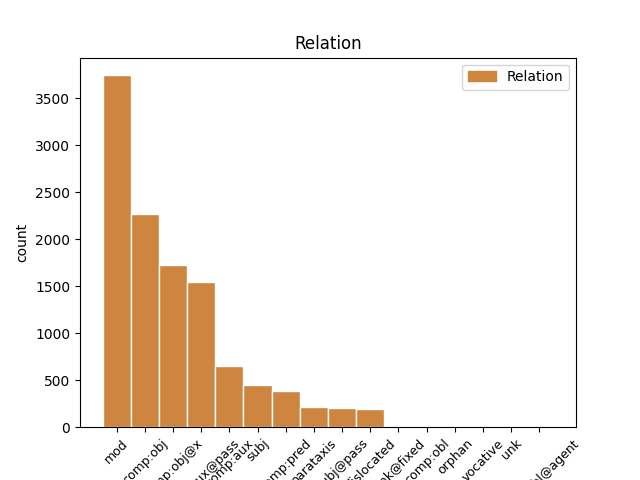
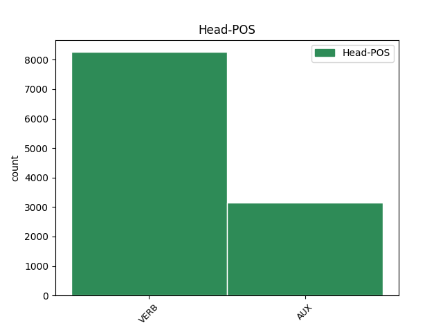
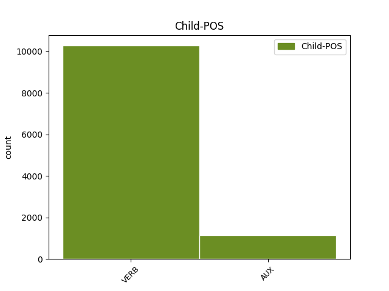

Distribution of features within this leaf



Agreement Rules sorted by frequency.
- When the dependent token is the modifer(mod) of the head token, and the head token is VERB
1 Quae _ _ _ _ 0 _ _ _
2 contemplantes contemplor VERB V- Case=Nom|Gender=Masc|Number=Plur|Tense=Pres|VerbForm=Part|Voice=Act 3 mod _ ref=1.113
3 expendere expendo VERB V- Tense=Pres|VerbForm=Inf|Voice=Act 0 _ _ _
4 oportebit _ _ _ _ 0 _ _ _
5 quid _ _ _ _ 0 _ _ _
6 quisque _ _ _ _ 0 _ _ _
7 habeat _ _ _ _ 0 _ _ _
8 sui _ _ _ _ 0 _ _ _
9 ea _ _ _ _ 0 _ _ _
10 que _ _ _ _ 0 _ _ _
11 moderari _ _ _ _ 0 _ _ _
12 ne _ _ _ _ 0 _ _ _
13 c _ _ _ _ 0 _ _ _
14 velle _ _ _ _ 0 _ _ _
15 experiri _ _ _ _ 0 _ _ _
16 quam _ _ _ _ 0 _ _ _
17 se _ _ _ _ 0 _ _ _
18 aliena _ _ _ _ 0 _ _ _
19 deceant _ _ _ _ 0 _ _ _
1 in _ _ _ _ 0 _ _ _
2 primis _ _ _ _ 0 _ _ _
3 que _ _ _ _ 0 _ _ _
4 provideat _ _ _ _ 0 _ _ _
5 ne _ _ _ _ 0 _ _ _
6 sermo _ _ _ _ 0 _ _ _
7 vitium _ _ _ _ 0 _ _ _
8 aliquod _ _ _ _ 0 _ _ _
9 indicet indico VERB V- Mood=Sub|Number=Sing|Person=3|Tense=Pres|VerbForm=Fin|Voice=Act 0 _ _ _
10 inesse insum VERB V- Tense=Pres|VerbForm=Inf|Voice=Act 9 comp:obj _ ref=1.134
11 in _ _ _ _ 0 _ _ _
12 moribus _ _ _ _ 0 _ _ _
1 Obiurgationes _ _ _ _ 0 _ _ _
2 etiam _ _ _ _ 0 _ _ _
3 non _ _ _ _ 0 _ _ _
4 numquam _ _ _ _ 0 _ _ _
5 incidunt _ _ _ _ 0 _ _ _
6 necessariae _ _ _ _ 0 _ _ _
7 in _ _ _ _ 0 _ _ _
8 quibus _ _ _ _ 0 _ _ _
9 utendum _ _ _ _ 0 _ _ _
10 est _ _ _ _ 0 _ _ _
11 fortasse _ _ _ _ 0 _ _ _
12 et _ _ _ _ 0 _ _ _
13 vocis _ _ _ _ 0 _ _ _
14 contentione _ _ _ _ 0 _ _ _
15 maiore _ _ _ _ 0 _ _ _
16 et _ _ _ _ 0 _ _ _
17 verborum _ _ _ _ 0 _ _ _
18 gravitate _ _ _ _ 0 _ _ _
19 acriore _ _ _ _ 0 _ _ _
20 id _ _ _ _ 0 _ _ _
21 agendum _ _ _ _ 0 _ _ _
22 etiam _ _ _ _ 0 _ _ _
23 ut _ _ _ _ 0 _ _ _
24 ea _ _ _ _ 0 _ _ _
25 facere facio VERB V- Tense=Pres|VerbForm=Inf|Voice=Act 26 comp:obj@x _ ref=1.136
26 videamur video VERB V- Mood=Sub|Number=Plur|Person=1|Tense=Pres|VerbForm=Fin|Voice=Pass 0 _ _ _
27 irati _ _ _ _ 0 _ _ _
1 Ex _ _ _ _ 0 _ _ _
2 quo _ _ _ _ 0 _ _ _
3 magis _ _ _ _ 0 _ _ _
4 emergit _ _ _ _ 0 _ _ _
5 quale _ _ _ _ 0 _ _ _
6 sit _ _ _ _ 0 _ _ _
7 decorum _ _ _ _ 0 _ _ _
8 illud _ _ _ _ 0 _ _ _
9 ideo _ _ _ _ 0 _ _ _
10 quia _ _ _ _ 0 _ _ _
11 nihil _ _ _ _ 0 _ _ _
12 decet _ _ _ _ 0 _ _ _
13 invita _ _ _ _ 0 _ _ _
14 Minerva _ _ _ _ 0 _ _ _
15 ut _ _ _ _ 0 _ _ _
16 aiunt _ _ _ _ 0 _ _ _
17 id _ _ _ _ 0 _ _ _
18 est sum AUX V- Mood=Ind|Number=Sing|Person=3|Tense=Pres|VerbForm=Fin|Voice=Act 0 _ _ _
19 adversante adversor VERB V- Case=Abl|Gender=Masc|Number=Sing|Tense=Pres|VerbForm=Part|Voice=Act 18 mod _ ref=1.110
20 et _ _ _ _ 0 _ _ _
21 repugnante _ _ _ _ 0 _ _ _
22 natura _ _ _ _ 0 _ _ _
1 est _ _ _ _ 0 _ _ _
2 enim _ _ _ _ 0 _ _ _
3 bellum _ _ _ _ 0 _ _ _
4 gestum _ _ _ _ 0 _ _ _
5 consilio _ _ _ _ 0 _ _ _
6 senatus _ _ _ _ 0 _ _ _
7 eius _ _ _ _ 0 _ _ _
8 qui _ _ _ _ 0 _ _ _
9 a _ _ _ _ 0 _ _ _
10 Solone _ _ _ _ 0 _ _ _
11 erat sum AUX V- Aspect=Imp|Mood=Ind|Number=Sing|Person=3|Tense=Past|VerbForm=Fin|Voice=Act 0 _ _ _
12 constitutus constituo VERB V- Aspect=Perf|Case=Nom|Gender=Masc|Number=Sing|Tense=Past|VerbForm=Part|Voice=Pass 11 comp:aux@pass _ ref=1.75
1 nam _ _ _ _ 0 _ _ _
2 et _ _ _ _ 0 _ _ _
3 quod _ _ _ _ 0 _ _ _
4 decet _ _ _ _ 0 _ _ _
5 honestum _ _ _ _ 0 _ _ _
6 est _ _ _ _ 0 _ _ _
7 et _ _ _ _ 0 _ _ _
8 quod _ _ _ _ 0 _ _ _
9 honestum _ _ _ _ 0 _ _ _
10 est sum AUX V- Mood=Ind|Number=Sing|Person=3|Tense=Pres|VerbForm=Fin|Voice=Act 11 subj _ ref=1.94
11 decet decet VERB V- Mood=Ind|Number=Sing|Person=3|Tense=Pres|VerbForm=Fin|Voice=Act 0 _ _ _
1 Est sum AUX V- Mood=Ind|Number=Sing|Person=3|Tense=Pres|VerbForm=Fin|Voice=Act 0 _ _ _
2 autem _ _ _ _ 0 _ _ _
3 quod _ _ _ _ 0 _ _ _
4 differat differo VERB V- Mood=Sub|Number=Sing|Person=3|Tense=Pres|VerbForm=Fin|Voice=Act 1 subj _ ref=1.99
5 in _ _ _ _ 0 _ _ _
6 hominum _ _ _ _ 0 _ _ _
7 ratione _ _ _ _ 0 _ _ _
8 habenda _ _ _ _ 0 _ _ _
9 inter _ _ _ _ 0 _ _ _
10 iustitiam _ _ _ _ 0 _ _ _
11 et _ _ _ _ 0 _ _ _
12 verecundiam _ _ _ _ 0 _ _ _
1 Iustitiae _ _ _ _ 0 _ _ _
2 partes _ _ _ _ 0 _ _ _
3 sunt sum AUX V- Mood=Ind|Number=Plur|Person=3|Tense=Pres|VerbForm=Fin|Voice=Act 0 _ _ _
4 non _ _ _ _ 0 _ _ _
5 violare violo VERB V- Tense=Pres|VerbForm=Inf|Voice=Act 3 comp:pred _ ref=1.99
6 homines _ _ _ _ 0 _ _ _
7 verecundiae _ _ _ _ 0 _ _ _
8 non _ _ _ _ 0 _ _ _
9 offendere _ _ _ _ 0 _ _ _
1 Ut _ _ _ _ 0 _ _ _
2 enim _ _ _ _ 0 _ _ _
3 in _ _ _ _ 0 _ _ _
4 corporibus _ _ _ _ 0 _ _ _
5 magnae _ _ _ _ 0 _ _ _
6 dissimilitudines _ _ _ _ 0 _ _ _
7 sunt _ _ _ _ 0 _ _ _
8 alios _ _ _ _ 0 _ _ _
9 videmus video VERB V- Mood=Ind|Number=Plur|Person=1|Tense=Pres|VerbForm=Fin|Voice=Act 29 parataxis _ ref=1.107
10 velocitate _ _ _ _ 0 _ _ _
11 ad _ _ _ _ 0 _ _ _
12 cursum _ _ _ _ 0 _ _ _
13 alios _ _ _ _ 0 _ _ _
14 viribus _ _ _ _ 0 _ _ _
15 ad _ _ _ _ 0 _ _ _
16 luctandum _ _ _ _ 0 _ _ _
17 valere _ _ _ _ 0 _ _ _
18 itemque _ _ _ _ 0 _ _ _
19 in _ _ _ _ 0 _ _ _
20 formis _ _ _ _ 0 _ _ _
21 aliis _ _ _ _ 0 _ _ _
22 dignitatem _ _ _ _ 0 _ _ _
23 inesse _ _ _ _ 0 _ _ _
24 aliis _ _ _ _ 0 _ _ _
25 venustatem _ _ _ _ 0 _ _ _
26 sic _ _ _ _ 0 _ _ _
27 in _ _ _ _ 0 _ _ _
28 animis _ _ _ _ 0 _ _ _
29 exsistunt exsisto VERB V- Mood=Ind|Number=Plur|Person=3|Tense=Pres|VerbForm=Fin|Voice=Act 0 _ _ _
30 maiores _ _ _ _ 0 _ _ _
31 etiam _ _ _ _ 0 _ _ _
32 varietates _ _ _ _ 0 _ _ _
1 Ut _ _ _ _ 0 _ _ _
2 enim _ _ _ _ 0 _ _ _
3 sermone _ _ _ _ 0 _ _ _
4 eo _ _ _ _ 0 _ _ _
5 debemus debeo VERB V- Mood=Ind|Number=Plur|Person=1|Tense=Pres|VerbForm=Fin|Voice=Act 29 dislocated _ ref=1.111
6 uti _ _ _ _ 0 _ _ _
7 qui _ _ _ _ 0 _ _ _
8 innatus _ _ _ _ 0 _ _ _
9 est _ _ _ _ 0 _ _ _
10 nobis _ _ _ _ 0 _ _ _
11 ne _ _ _ _ 0 _ _ _
12 ut _ _ _ _ 0 _ _ _
13 quidam _ _ _ _ 0 _ _ _
14 Graeca _ _ _ _ 0 _ _ _
15 verba _ _ _ _ 0 _ _ _
16 inculcantes _ _ _ _ 0 _ _ _
17 iure _ _ _ _ 0 _ _ _
18 optimo _ _ _ _ 0 _ _ _
19 rideamur _ _ _ _ 0 _ _ _
20 sic _ _ _ _ 0 _ _ _
21 in _ _ _ _ 0 _ _ _
22 actiones _ _ _ _ 0 _ _ _
23 omnem _ _ _ _ 0 _ _ _
24 que _ _ _ _ 0 _ _ _
25 vitam _ _ _ _ 0 _ _ _
26 nullam _ _ _ _ 0 _ _ _
27 discrepantiam _ _ _ _ 0 _ _ _
28 conferre _ _ _ _ 0 _ _ _
29 debemus debeo VERB V- Mood=Ind|Number=Plur|Person=1|Tense=Pres|VerbForm=Fin|Voice=Act 0 _ _ _
1 Ex _ _ _ _ 0 _ _ _
2 quo _ _ _ _ 0 _ _ _
3 intellegitur intellego VERB V- Mood=Ind|Number=Sing|Person=3|Tense=Pres|VerbForm=Fin|Voice=Pass 0 _ _ _
4 corporis _ _ _ _ 0 _ _ _
5 voluptatem _ _ _ _ 0 _ _ _
6 non _ _ _ _ 0 _ _ _
7 satis _ _ _ _ 0 _ _ _
8 esse sum AUX V- Tense=Pres|VerbForm=Inf|Voice=Act 3 subj@pass _ ref=1.106
9 dignam _ _ _ _ 0 _ _ _
10 hominis _ _ _ _ 0 _ _ _
11 praestantia _ _ _ _ 0 _ _ _
12 eam _ _ _ _ 0 _ _ _
13 que _ _ _ _ 0 _ _ _
14 contemni _ _ _ _ 0 _ _ _
15 et _ _ _ _ 0 _ _ _
16 reici _ _ _ _ 0 _ _ _
17 oportere _ _ _ _ 0 _ _ _
1 Quo _ _ _ _ 0 _ _ _
2 in _ _ _ _ 0 _ _ _
3 genere _ _ _ _ 0 _ _ _
4 etiam _ _ _ _ 0 _ _ _
5 in _ _ _ _ 0 _ _ _
6 re _ _ _ _ 0 _ _ _
7 publica _ _ _ _ 0 _ _ _
8 multa _ _ _ _ 0 _ _ _
9 peccantur _ _ _ _ 0 _ _ _
10 ut _ _ _ _ 0 _ _ _
11 ille _ _ _ _ 0 _ _ _
12 qui _ _ _ _ 0 _ _ _
13 cum _ _ _ _ 0 _ _ _
14 triginta _ _ _ _ 0 _ _ _
15 dierum _ _ _ _ 0 _ _ _
16 essent _ _ _ _ 0 _ _ _
17 cum _ _ _ _ 0 _ _ _
18 hoste _ _ _ _ 0 _ _ _
19 indutiae _ _ _ _ 0 _ _ _
20 factae _ _ _ _ 0 _ _ _
21 noctu _ _ _ _ 0 _ _ _
22 populabatur _ _ _ _ 0 _ _ _
23 agros _ _ _ _ 0 _ _ _
24 quod _ _ _ _ 0 _ _ _
25 dierum _ _ _ _ 0 _ _ _
26 essent sum AUX V- Aspect=Imp|Mood=Sub|Number=Plur|Person=3|Tense=Past|VerbForm=Fin|Voice=Act 0 _ _ _
27 pactae paciscor VERB V- Aspect=Perf|Case=Nom|Gender=Fem|Number=Plur|Tense=Past|VerbForm=Part|Voice=Pass 26 comp:aux _ ref=1.33
28 non _ _ _ _ 0 _ _ _
29 noctium _ _ _ _ 0 _ _ _
30 indutiae _ _ _ _ 0 _ _ _
1 A _ _ _ _ 0 _ _ _
2 quibus _ _ _ _ 0 _ _ _
3 cum _ _ _ _ 0 _ _ _
4 paulo _ _ _ _ 0 _ _ _
5 tardius _ _ _ _ 0 _ _ _
6 esset _ _ _ _ 0 _ _ _
7 administratum _ _ _ _ 0 _ _ _
8 ipse _ _ _ _ 0 _ _ _
9 hora _ _ _ _ 0 _ _ _
10 diei _ _ _ _ 0 _ _ _
11 circiter _ _ _ _ 0 _ _ _
12 quarta _ _ _ _ 0 _ _ _
13 cum _ _ _ _ 0 _ _ _
14 primis _ _ _ _ 0 _ _ _
15 navibus _ _ _ _ 0 _ _ _
16 Britanniam _ _ _ _ 0 _ _ _
17 attigit _ _ _ _ 0 _ _ _
18 atque _ _ _ _ 0 _ _ _
19 ibi _ _ _ _ 0 _ _ _
20 in _ _ _ _ 0 _ _ _
21 omnibus _ _ _ _ 0 _ _ _
22 collibus _ _ _ _ 0 _ _ _
23 expositas expono VERB V- Aspect=Perf|Case=Acc|Gender=Fem|Number=Plur|Tense=Past|VerbForm=Part|Voice=Pass 27 comp:pred _ ref=4.23.2
24 hostium _ _ _ _ 0 _ _ _
25 copias _ _ _ _ 0 _ _ _
26 armatas _ _ _ _ 0 _ _ _
27 conspexit conspicio VERB V- Aspect=Perf|Mood=Ind|Number=Sing|Person=3|Tense=Past|VerbForm=Fin|Voice=Act 0 _ _ _
1 Omnino _ _ _ _ 0 _ _ _
2 fortis _ _ _ _ 0 _ _ _
3 animus _ _ _ _ 0 _ _ _
4 et _ _ _ _ 0 _ _ _
5 magnus _ _ _ _ 0 _ _ _
6 duabus _ _ _ _ 0 _ _ _
7 rebus _ _ _ _ 0 _ _ _
8 maxime _ _ _ _ 0 _ _ _
9 cernitur _ _ _ _ 0 _ _ _
10 quarum _ _ _ _ 0 _ _ _
11 una _ _ _ _ 0 _ _ _
12 in _ _ _ _ 0 _ _ _
13 rerum _ _ _ _ 0 _ _ _
14 externarum _ _ _ _ 0 _ _ _
15 despicientia _ _ _ _ 0 _ _ _
16 ponitur _ _ _ _ 0 _ _ _
17 cum _ _ _ _ 0 _ _ _
18 persuasum _ _ _ _ 0 _ _ _
19 est sum AUX V- Mood=Ind|Number=Sing|Person=3|Tense=Pres|VerbForm=Fin|Voice=Act 0 _ _ _
20 nihil _ _ _ _ 0 _ _ _
21 hominem _ _ _ _ 0 _ _ _
22 nisi _ _ _ _ 0 _ _ _
23 quod _ _ _ _ 0 _ _ _
24 honestum _ _ _ _ 0 _ _ _
25 decorum _ _ _ _ 0 _ _ _
26 que _ _ _ _ 0 _ _ _
27 sit _ _ _ _ 0 _ _ _
28 aut _ _ _ _ 0 _ _ _
29 admirari _ _ _ _ 0 _ _ _
30 aut _ _ _ _ 0 _ _ _
31 optare _ _ _ _ 0 _ _ _
32 aut _ _ _ _ 0 _ _ _
33 expetere _ _ _ _ 0 _ _ _
34 oportere oportet VERB V- Tense=Pres|VerbForm=Inf|Voice=Act 19 subj@pass _ ref=1.66
35 nulli _ _ _ _ 0 _ _ _
36 que _ _ _ _ 0 _ _ _
37 ne _ _ _ _ 0 _ _ _
38 que _ _ _ _ 0 _ _ _
39 homini _ _ _ _ 0 _ _ _
40 ne _ _ _ _ 0 _ _ _
41 que _ _ _ _ 0 _ _ _
42 perturbationi _ _ _ _ 0 _ _ _
43 animi _ _ _ _ 0 _ _ _
44 ne _ _ _ _ 0 _ _ _
45 c _ _ _ _ 0 _ _ _
46 fortunae _ _ _ _ 0 _ _ _
47 succumbere _ _ _ _ 0 _ _ _
1 Ut _ _ _ _ 0 _ _ _
2 venustas _ _ _ _ 0 _ _ _
3 et _ _ _ _ 0 _ _ _
4 pulchritudo _ _ _ _ 0 _ _ _
5 corporis _ _ _ _ 0 _ _ _
6 secerni _ _ _ _ 0 _ _ _
7 non _ _ _ _ 0 _ _ _
8 potest possum VERB V- Mood=Ind|Number=Sing|Person=3|Tense=Pres|VerbForm=Fin|Voice=Act 20 dislocated _ ref=1.95
9 a _ _ _ _ 0 _ _ _
10 valetudine _ _ _ _ 0 _ _ _
11 sic _ _ _ _ 0 _ _ _
12 hoc _ _ _ _ 0 _ _ _
13 de _ _ _ _ 0 _ _ _
14 quo _ _ _ _ 0 _ _ _
15 loquimur _ _ _ _ 0 _ _ _
16 decorum _ _ _ _ 0 _ _ _
17 totum _ _ _ _ 0 _ _ _
18 illud _ _ _ _ 0 _ _ _
19 quidem _ _ _ _ 0 _ _ _
20 est sum AUX V- Mood=Ind|Number=Sing|Person=3|Tense=Pres|VerbForm=Fin|Voice=Act 0 _ _ _
21 cum _ _ _ _ 0 _ _ _
22 virtute _ _ _ _ 0 _ _ _
23 confusum _ _ _ _ 0 _ _ _
24 sed _ _ _ _ 0 _ _ _
25 mente _ _ _ _ 0 _ _ _
26 et _ _ _ _ 0 _ _ _
27 cogitatione _ _ _ _ 0 _ _ _
28 distinguitur _ _ _ _ 0 _ _ _
1 quamquam _ _ _ _ 0 _ _ _
2 haec _ _ _ _ 0 _ _ _
3 quidem _ _ _ _ 0 _ _ _
4 res _ _ _ _ 0 _ _ _
5 non _ _ _ _ 0 _ _ _
6 solum _ _ _ _ 0 _ _ _
7 ex _ _ _ _ 0 _ _ _
8 domestica _ _ _ _ 0 _ _ _
9 est sum AUX V- Mood=Ind|Number=Sing|Person=3|Tense=Pres|VerbForm=Fin|Voice=Act 0 _ _ _
10 ratione _ _ _ _ 0 _ _ _
11 attingit attingo VERB V- Mood=Ind|Number=Sing|Person=3|Tense=Pres|VerbForm=Fin|Voice=Act 9 parataxis _ ref=1.76
12 etiam _ _ _ _ 0 _ _ _
13 bellicam _ _ _ _ 0 _ _ _
14 quoniam _ _ _ _ 0 _ _ _
15 vi _ _ _ _ 0 _ _ _
16 manu _ _ _ _ 0 _ _ _
17 que _ _ _ _ 0 _ _ _
18 confecta _ _ _ _ 0 _ _ _
19 est _ _ _ _ 0 _ _ _
20 sed _ _ _ _ 0 _ _ _
21 tamen _ _ _ _ 0 _ _ _
22 id _ _ _ _ 0 _ _ _
23 ipsum _ _ _ _ 0 _ _ _
24 est _ _ _ _ 0 _ _ _
25 gestum _ _ _ _ 0 _ _ _
26 consilio _ _ _ _ 0 _ _ _
27 urbano _ _ _ _ 0 _ _ _
28 sine _ _ _ _ 0 _ _ _
29 exercitu _ _ _ _ 0 _ _ _
1 Ludo _ _ _ _ 0 _ _ _
2 autem _ _ _ _ 0 _ _ _
3 et _ _ _ _ 0 _ _ _
4 ioco _ _ _ _ 0 _ _ _
5 uti _ _ _ _ 0 _ _ _
6 illo _ _ _ _ 0 _ _ _
7 quidem _ _ _ _ 0 _ _ _
8 licet _ _ _ _ 0 _ _ _
9 sed _ _ _ _ 0 _ _ _
10 sicut _ _ _ _ 0 _ _ _
11 somno _ _ _ _ 0 _ _ _
12 et _ _ _ _ 0 _ _ _
13 quietibus _ _ _ _ 0 _ _ _
14 ceteris _ _ _ _ 0 _ _ _
15 tum _ _ _ _ 0 _ _ _
16 cum _ _ _ _ 0 _ _ _
17 gravibus _ _ _ _ 0 _ _ _
18 seriis _ _ _ _ 0 _ _ _
19 que _ _ _ _ 0 _ _ _
20 rebus _ _ _ _ 0 _ _ _
21 satis satisfacio VERB V- Aspect=Perf|Mood=Sub|Number=Plur|Person=1|Tense=Past|VerbForm=Fin|Voice=Act 0 _ _ _
22 fecerimus fecerimus VERB V- Aspect=Perf|Mood=Sub|Number=Plur|Person=1|Tense=Past|VerbForm=Fin|Voice=Act 21 unk@fixed _ ref=1.103
1 negavi _ _ _ _ 0 _ _ _
2 me _ _ _ _ 0 _ _ _
3 cuiquam _ _ _ _ 0 _ _ _
4 negotianti negotior VERB V- Case=Dat|Gender=Masc|Number=Sing|Tense=Pres|VerbForm=Part|Voice=Act 5 comp:obl _ ref=5.21.10
5 dare do VERB V- Tense=Pres|VerbForm=Inf|Voice=Act 0 _ _ _
1 age ago VERB V- Mood=Imp|Number=Sing|Person=2|Tense=Pres|VerbForm=Fin|Voice=Act 6 vocative _ ref=7.1.2
2 hoc _ _ _ _ 0 _ _ _
3 malum _ _ _ _ 0 _ _ _
4 mihi _ _ _ _ 0 _ _ _
5 commune _ _ _ _ 0 _ _ _
6 est sum AUX V- Mood=Ind|Number=Sing|Person=3|Tense=Pres|VerbForm=Fin|Voice=Act 0 _ _ _
7 cum _ _ _ _ 0 _ _ _
8 omnibus _ _ _ _ 0 _ _ _
1 quin _ _ _ _ 0 _ _ _
2 etiam _ _ _ _ 0 _ _ _
3 libellum _ _ _ _ 0 _ _ _
4 ipsius _ _ _ _ 0 _ _ _
5 habeo _ _ _ _ 0 _ _ _
6 in _ _ _ _ 0 _ _ _
7 quo _ _ _ _ 0 _ _ _
8 est sum AUX V- Mood=Ind|Number=Sing|Person=3|Tense=Pres|VerbForm=Fin|Voice=Act 0 _ _ _
9 Salaminii _ _ _ _ 0 _ _ _
10 pecuniam _ _ _ _ 0 _ _ _
11 debent debeo VERB V- Mood=Ind|Number=Plur|Person=3|Tense=Pres|VerbForm=Fin|Voice=Act 8 comp:obj _ ref=6.1.5
12 Marco _ _ _ _ 0 _ _ _
13 Scaptio _ _ _ _ 0 _ _ _
14 et _ _ _ _ 0 _ _ _
15 Publio _ _ _ _ 0 _ _ _
16 Matinio _ _ _ _ 0 _ _ _
17 familiaribus _ _ _ _ 0 _ _ _
18 meis _ _ _ _ 0 _ _ _
1 cum _ _ _ _ 0 _ _ _
2 autem _ _ _ _ 0 _ _ _
3 videritis _ _ _ _ 0 _ _ _
4 abominationem _ _ _ _ 0 _ _ _
5 desolationis _ _ _ _ 0 _ _ _
6 stantem sto VERB V- Case=Acc|Gender=Fem,Masc|Number=Sing|Tense=Pres|VerbForm=Part|Voice=Act 0 _ _ _
7 ubi _ _ _ _ 0 _ _ _
8 non _ _ _ _ 0 _ _ _
9 debet debeo VERB V- Mood=Ind|Number=Sing|Person=3|Tense=Pres|VerbForm=Fin|Voice=Act 6 unk _ ref=MARK_13.14
10 qui _ _ _ _ 0 _ _ _
11 legit _ _ _ _ 0 _ _ _
12 intellegat _ _ _ _ 0 _ _ _
13 tunc _ _ _ _ 0 _ _ _
14 qui _ _ _ _ 0 _ _ _
15 in _ _ _ _ 0 _ _ _
16 Iudaea _ _ _ _ 0 _ _ _
17 sunt _ _ _ _ 0 _ _ _
18 fugiant _ _ _ _ 0 _ _ _
19 in _ _ _ _ 0 _ _ _
20 montes _ _ _ _ 0 _ _ _
1 nam _ _ _ _ 0 _ _ _
2 quod _ _ _ _ 0 _ _ _
3 inpossibile _ _ _ _ 0 _ _ _
4 erat sum AUX V- Aspect=Imp|Mood=Ind|Number=Sing|Person=3|Tense=Past|VerbForm=Fin|Voice=Act 22 vocative _ ref=ROM_8.3
5 legis _ _ _ _ 0 _ _ _
6 in _ _ _ _ 0 _ _ _
7 quo _ _ _ _ 0 _ _ _
8 infirmabatur _ _ _ _ 0 _ _ _
9 per _ _ _ _ 0 _ _ _
10 carnem _ _ _ _ 0 _ _ _
11 Deus _ _ _ _ 0 _ _ _
12 Filium _ _ _ _ 0 _ _ _
13 suum _ _ _ _ 0 _ _ _
14 mittens _ _ _ _ 0 _ _ _
15 in _ _ _ _ 0 _ _ _
16 similitudinem _ _ _ _ 0 _ _ _
17 carnis _ _ _ _ 0 _ _ _
18 peccati _ _ _ _ 0 _ _ _
19 et _ _ _ _ 0 _ _ _
20 de _ _ _ _ 0 _ _ _
21 peccato _ _ _ _ 0 _ _ _
22 damnavit damno VERB V- Aspect=Perf|Mood=Ind|Number=Sing|Person=3|Tense=Past|VerbForm=Fin|Voice=Act 0 _ _ _
23 peccatum _ _ _ _ 0 _ _ _
24 in _ _ _ _ 0 _ _ _
25 carne _ _ _ _ 0 _ _ _
Disagree Examples:
1 Iacob _ _ _ _ 0 _ _ _
2 autem _ _ _ _ 0 _ _ _
3 genuit _ _ _ _ 0 _ _ _
4 Ioseph _ _ _ _ 0 _ _ _
5 virum _ _ _ _ 0 _ _ _
6 Mariae _ _ _ _ 0 _ _ _
7 de _ _ _ _ 0 _ _ _
8 qua _ _ _ _ 0 _ _ _
9 natus nascor VERB V- Aspect=Perf|Case=Nom|Gender=Masc|Number=Sing|Tense=Past|VerbForm=Part|Voice=Pass 10 comp:aux _ ref=MATT_1.16
10 est sum AUX V- Mood=Ind|Number=Sing|Person=3|Tense=Pres|VerbForm=Fin|Voice=Act 0 _ _ _
11 Iesus _ _ _ _ 0 _ _ _
12 qui _ _ _ _ 0 _ _ _
13 vocatur _ _ _ _ 0 _ _ _
14 Christus _ _ _ _ 0 _ _ _
1 cum _ _ _ _ 0 _ _ _
2 esset _ _ _ _ 0 _ _ _
3 desponsata _ _ _ _ 0 _ _ _
4 mater _ _ _ _ 0 _ _ _
5 eius _ _ _ _ 0 _ _ _
6 Maria _ _ _ _ 0 _ _ _
7 Ioseph _ _ _ _ 0 _ _ _
8 antequam _ _ _ _ 0 _ _ _
9 convenirent _ _ _ _ 0 _ _ _
10 inventa invenio VERB V- Aspect=Perf|Case=Nom|Gender=Fem|Number=Sing|Tense=Past|VerbForm=Part|Voice=Pass 11 comp:aux@pass _ ref=MATT_1.18
11 est sum AUX V- Mood=Ind|Number=Sing|Person=3|Tense=Pres|VerbForm=Fin|Voice=Act 0 _ _ _
12 in _ _ _ _ 0 _ _ _
13 utero _ _ _ _ 0 _ _ _
14 habens _ _ _ _ 0 _ _ _
15 de _ _ _ _ 0 _ _ _
16 Spiritu _ _ _ _ 0 _ _ _
17 Sancto _ _ _ _ 0 _ _ _
1 cum _ _ _ _ 0 _ _ _
2 esset _ _ _ _ 0 _ _ _
3 desponsata _ _ _ _ 0 _ _ _
4 mater _ _ _ _ 0 _ _ _
5 eius _ _ _ _ 0 _ _ _
6 Maria _ _ _ _ 0 _ _ _
7 Ioseph _ _ _ _ 0 _ _ _
8 antequam _ _ _ _ 0 _ _ _
9 convenirent _ _ _ _ 0 _ _ _
10 inventa invenio VERB V- Aspect=Perf|Case=Nom|Gender=Fem|Number=Sing|Tense=Past|VerbForm=Part|Voice=Pass 0 _ _ _
11 est _ _ _ _ 0 _ _ _
12 in _ _ _ _ 0 _ _ _
13 utero _ _ _ _ 0 _ _ _
14 habens habeo VERB V- Case=Nom|Gender=Fem|Number=Sing|Tense=Pres|VerbForm=Part|Voice=Act 10 comp:pred _ ref=MATT_1.18
15 de _ _ _ _ 0 _ _ _
16 Spiritu _ _ _ _ 0 _ _ _
17 Sancto _ _ _ _ 0 _ _ _
1 Ioseph _ _ _ _ 0 _ _ _
2 autem _ _ _ _ 0 _ _ _
3 vir _ _ _ _ 0 _ _ _
4 eius _ _ _ _ 0 _ _ _
5 cum _ _ _ _ 0 _ _ _
6 esset _ _ _ _ 0 _ _ _
7 iustus _ _ _ _ 0 _ _ _
8 et _ _ _ _ 0 _ _ _
9 nollet nolo VERB V- Aspect=Imp|Mood=Sub|Number=Sing|Person=3|Tense=Past|VerbForm=Fin|Voice=Act 0 _ _ _
10 eam _ _ _ _ 0 _ _ _
11 traducere traduco VERB V- Tense=Pres|VerbForm=Inf|Voice=Act 9 comp:obj@x _ ref=MATT_1.19
12 voluit _ _ _ _ 0 _ _ _
13 occulte _ _ _ _ 0 _ _ _
14 dimittere _ _ _ _ 0 _ _ _
15 eam _ _ _ _ 0 _ _ _
1 Ioseph _ _ _ _ 0 _ _ _
2 autem _ _ _ _ 0 _ _ _
3 vir _ _ _ _ 0 _ _ _
4 eius _ _ _ _ 0 _ _ _
5 cum _ _ _ _ 0 _ _ _
6 esset _ _ _ _ 0 _ _ _
7 iustus _ _ _ _ 0 _ _ _
8 et _ _ _ _ 0 _ _ _
9 nollet _ _ _ _ 0 _ _ _
10 eam _ _ _ _ 0 _ _ _
11 traducere _ _ _ _ 0 _ _ _
12 voluit volo VERB V- Aspect=Perf|Mood=Ind|Number=Sing|Person=3|Tense=Past|VerbForm=Fin|Voice=Act 0 _ _ _
13 occulte _ _ _ _ 0 _ _ _
14 dimittere dimitto VERB V- Tense=Pres|VerbForm=Inf|Voice=Act 12 comp:obj@x _ ref=MATT_1.19
15 eam _ _ _ _ 0 _ _ _